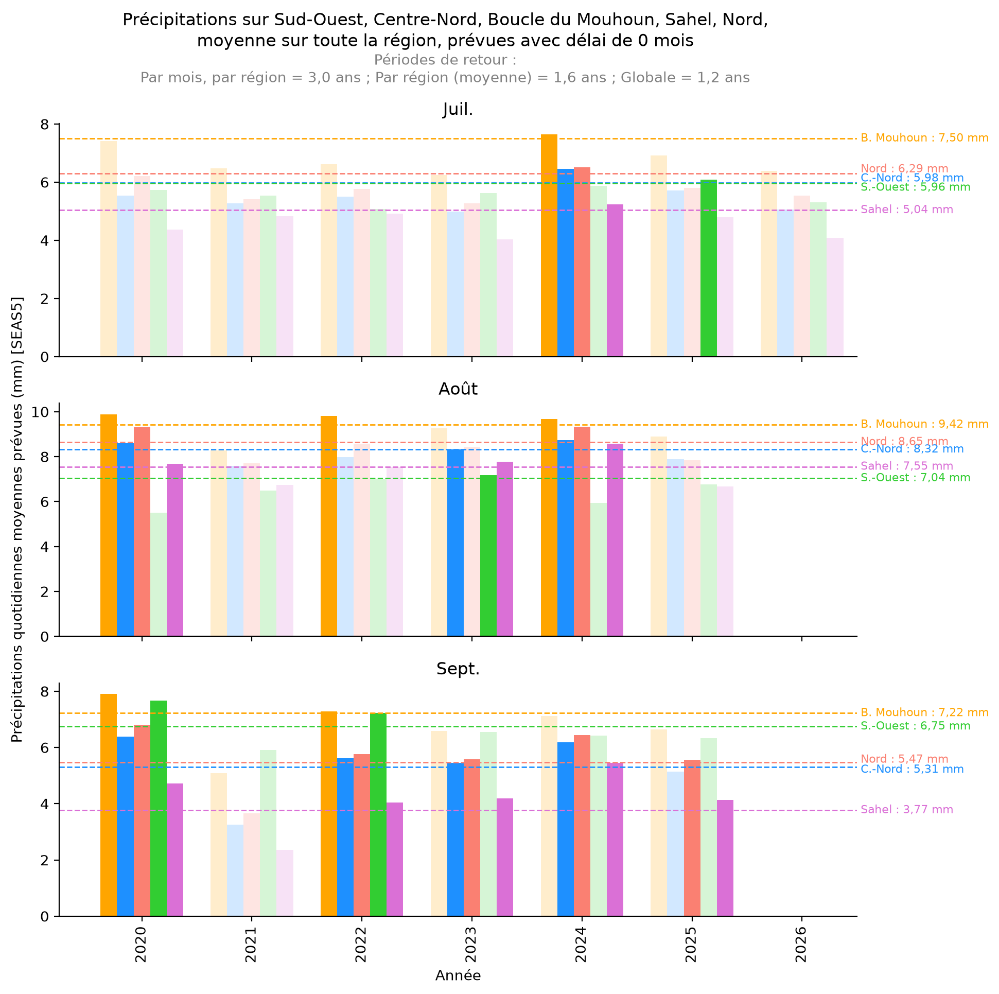

Juillet 2026 : aucun seuil atteint.
Les précipitations prévues (délai de 0 mois) restent en dessous du seuil
de déclenchement (période de retour de 3 ans) dans les cinq régions
suivies : Sahel, Centre-Nord, Nord, Boucle du Mouhoun et Sud-Ouest.
